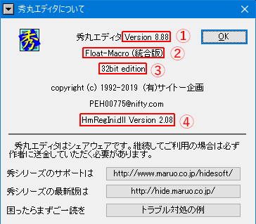

秀丸エディタは以下の場所で入手可能です。
秀丸エディタＱ＆Ａ集第８版の執筆・編集段階での秀丸エディタの最新版は次の通りです。 トラブルが発生するようであれば、まず最新版を導入することをお奨めします。
| 種類 | Version | アーカイブ名 |
|---|---|---|
| 32bit版 | 8.89 | hm889_signed.exe |
| 64bit版 | 8.89 | hm889_x64_signed.exe |
秀丸エディタの対応OSは、Windows 98、Me、NT4.0、2000、XP、Vista、7、8、8.1、 10(Pro、Home エディション の Current Branch) になります。
Windows XP以降の場合、32bitおよび64bit OS に対応。
なるべく新しいOSでの使用を推奨します。
2019/12/28現在、Microsoft の サポート対象なのは、Windows10 Version 1809以降です。
(Windows10以外は、すでにメインストリームサポートは終了しています。)
Windowsのサポートに期間に関しては、 Windows ライフサイクルのファクト シート を参照してください。
以前あった、WindowsNT(Alpha)、WindowsNT(PowerPC)、Windows3.1用の秀丸エディタは、すでに更新されていません。 (Alpha、PowerPC版は古いバージョンがダウンロード可能ですが、3.1用はダウンロード出来ません。)
現在(2019/12/28)、秀丸エディタは以下のバージョンが公開されています
さらに、各バージョンには、32bit版、64bit版があります。 64bit OSでは、秀丸エディタの32bit版、64bit版のどちらでも使用可能です。
日本語版Windowsを使っているなら、日本語版を使用する事を推奨します。
浮動小数点版とは、マクロで使用する数値が、小数点を扱えるようになるバージョンです。 (通常版は整数のみで、小数点以下は扱えない。)
Windows10(Version 1607以降)用ストアアプリ版も公開されています。
ストアアプリ版は、既存の秀丸エディタ(デスクトップ版)とは別のアプリケーション扱いで、 ライセンスや設定も別になります。
ストアアプリ版は32bit版のみで、64bit版はありません。64bit OS でも32bit版を使うことになります。 また、「英語版」、「浮動小数点版」はありません。「日本語版」のみです。
詳細は秀まるおのホームページの 秀丸エディタ(ストアアプリ版) を参照してください。
ストアアプリ版は、Windowsの自動更新が有効なら、自動的にアップデートされます。
使用している秀丸エディタの種類やバージョン、bit数の確認方法(デスクトップ版)
メニューの「その他 - 秀丸エディタについて」を選ぶとバージョン情報ダイアログが表示されます。

表示されている内容は以下になります。
使用している秀丸エディタより、新しいバージョンが公開されているか確認する方法(デスクトップ版)
使用中の秀丸エディタより新しいバージョンが公開されているかどうかは、 メニューの「その他 - 最新バージョンの確認」を実行することで確認できます。 (チェックできるのは、一日一回のみ)